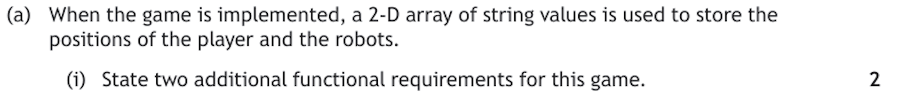
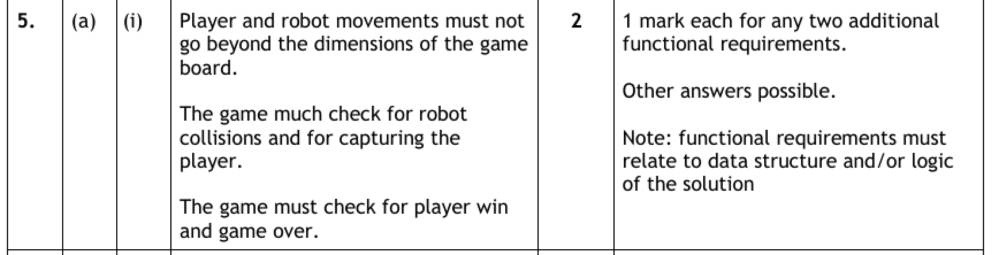
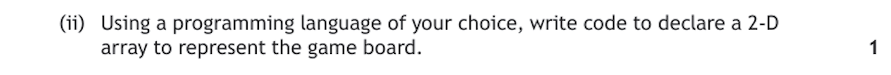
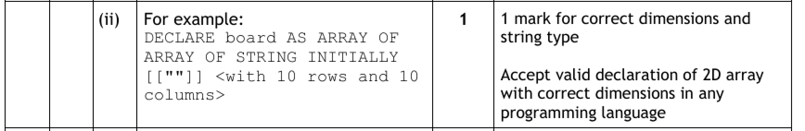
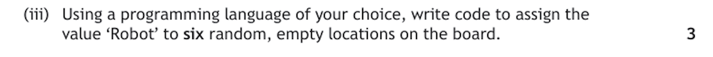
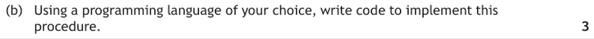
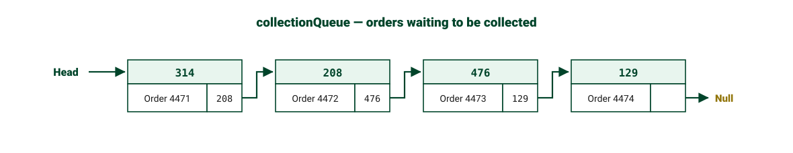
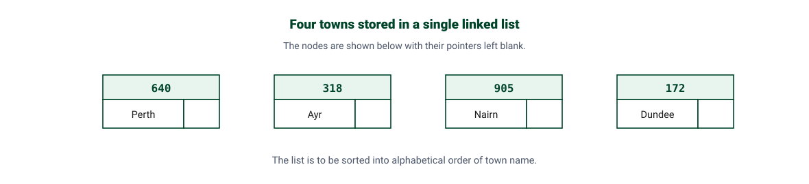

Data Structures at Advanced Higher
A data structure is simply an organised way of holding related data in memory. Choosing the right one is one of the things that separates an Advanced Higher solution from a Higher one — and both the question paper and the project will ask you to justify your choice, not just use it.
Three structures come straight back from Higher and are used freely in Advanced Higher questions without being re-explained:
- 1D arrays — a single list of values, all of the same data type;
- parallel 1D arrays — several 1D arrays where the same index links related values together;
- records and arrays of records — a record groups fields of different types under one name, and an array of records stores a list of them.
Three more are new at Advanced Higher:
- the 2D array — a grid of values addressed by two indices, which you must be able to implement;
- the array of objects — a list of objects created from a class, which belongs with object-oriented programming and is covered in detail on the Object-Oriented Programming page;
- the linked list, in both single and double forms — which you must be able to describe and exemplify, but not implement in code.
Key Terms
scores[4].stock[3].price.grid[row][column].Higher Recap — Parallel Arrays & Arrays of Records
Advanced Higher questions use both of these without explanation, so they need to be automatic. What is new is being asked to choose between them and justify it.
Parallel 1D arrays
Parallel 1D arrays store related data in separate arrays, linked only by the fact that the same index position in every array refers to the same real-world thing. If pupilName[3] is "Aisha", then averageScore[3] is Aisha's average score.
DECLARE pupilName AS ARRAY OF STRING INITIALLY [""] * 5
DECLARE yearGroup AS ARRAY OF STRING INITIALLY [""] * 5
DECLARE averageScore AS ARRAY OF INTEGER INITIALLY [0] * 5
SET pupilName[3] TO "Aisha"
SET yearGroup[3] TO "S6"
SET averageScore[3] TO 67
# index 3 in all three arrays describes the same pupil
SEND pupilName[3] & " scored " & averageScore[3] TO DISPLAYaverageScore without sorting the other two in exactly the same way, every pupil is instantly attached to the wrong score. This "falling out of step" risk is the standard exam criticism of parallel arrays.Records and arrays of records
A record fixes that problem by grouping the fields for one item into a single value with a name of its own. An array of records then stores a list of them — so one index gives you the whole pupil, not just one of their attributes.
![Two SQA reference language declarations shown one above the other and colour-coded. Step 1 declares the record: DECLARE pupilRecord AS RECORD with the fields STRING pupilName, STRING yearGroup and INT averageScore, with the record name pupilRecord in dark green, the field names in mid green and the data types in blue. Step 2 declares an array of that record: DECLARE pupilArray AS ARRAY OF RECORD pupilRecord, size 5, with the array name pupilArray in purple, the record name pupilRecord again in dark green and the size 5 in gold. A curved arrow runs from pupilRecord in the first declaration to pupilRecord in the second, showing that the record must be defined before an array of it can be declared.](../resources/sdd/array-of-records-declaration.svg)
RECORD pupilRecord IS {STRING pupilName, STRING yearGroup, INTEGER averageScore}
DECLARE pupilArray AS ARRAY OF pupilRecord INITIALLY [ ] * 5
SET pupilArray[3].pupilName TO "Aisha"
SET pupilArray[3].yearGroup TO "S6"
SET pupilArray[3].averageScore TO 67
# one index now gives the whole pupil
SEND pupilArray[3].pupilName & " scored " & pupilArray[3].averageScore TO DISPLAYclass PupilRecord:
def __init__(self, pupilName="", yearGroup="", averageScore=0):
self.pupilName = pupilName
self.yearGroup = yearGroup
self.averageScore = averageScore
pupilArray = [PupilRecord() for i in range(5)]
pupilArray[3].pupilName = "Aisha"
pupilArray[3].yearGroup = "S6"
pupilArray[3].averageScore = 67DECLARE pupilRecord AS RECORD (...) form you may have met at Higher; the code beside it uses the RECORD pupilRecord IS { ... } form used in recent Advanced Higher papers. Both describe exactly the same structure, and marks are awarded for the structure — a named record with correctly typed fields, and an array declared to hold it — not for the punctuation.Choosing between them
| Parallel 1D arrays | Array of records | |
|---|---|---|
| How data is linked | By index position only — nothing enforces it | By the record itself — the fields are one value |
| Sorting | Every array must be re-ordered identically or the data corrupts | Move one record and all of its fields move with it |
| Passing to a procedure | Every array must be passed as a separate parameter | One record, or one array, passes as a single parameter |
| Mixed data types | Fine — each array has its own type | Fine — each field has its own type |
| Best suited to | Small programs, or when one attribute is processed on its own | Anything where the attributes belong to one real-world item |
In an Advanced Higher answer, the winning phrase is usually: "an array of records keeps all the data for one item together, so records cannot become mismatched when the data is sorted or passed between procedures."
Worked Example — an array of records in the exam
This is 2023 Question 5, the EnviroScot climate tracker — a question built entirely on two arrays of records. Each part is walked through step by step, then a full sample answer is given for you to compare yours against. The Design page covers the same question from the point of view of the design method.
The scenario and its data structures:
![2023 Question 5. EnviroScot has set up 500 weather stations across Scotland to track the effect of climate change. Several weather stations have been placed in each of the 32 local authorities. The rainfall in centimetres for 28 February 2023 from all 500 weather stations has been stored in a CSV file. A structure diagram shows the Climate Tracker program with five modules: read weather data from file, extract unique local authority names, insertion sort local authority names, calculate average rainfall for each local authority, and compare local authority data. The data is read into an array of 500 records called readingsArray with the record structure RECORD reading IS open brace STRING place, STRING authority, INTEGER rainfall close brace. A sample table of data is shown.](../resources/integrated/worked-examples/ah_design_q1-1.png)
Read the two record structures before anything else. Almost every mark in this question depends on knowing which array holds what:
readingsArray— 500 records of{STRING place, STRING authority, INTEGER rainfall}. One record per weather station reading, and several records share the sameauthority.rainfallArray— 32 records of{STRING local, INTEGER averageRainfall}. One record per local authority, and it starts empty.
Notice the shape of the problem: 500 records in, 32 records out. That mismatch is why every part below needs a loop, and why part (a)(iii) needs a loop inside a loop.
a i Extract a unique list of local authority names 3 marks

Say what it does in one sentence: "Go through the readings, and every time I meet an authority I have not seen before, add it to the rainfall array." That sentence is the algorithm — now build it one decision at a time. Each stage adds only the gold lines.
1What repeats, and what stops it?
You are working through readingsArray — but you do not need all 500. There are only 32 authorities, and once all 32 are found there is nothing left to look for. So the loop is conditional, bounded by the size of the output array, not the input:
while numLAFound < 32end while2What happens on one pass?
Look at the authority field of the reading you are on and decide whether it is new. This is where the record structure earns its keep — you reach one field of one record with readingsArray[readingsPosition].authority:
while numLAFound < 32 if readingsArray[readingsPosition].authority is not already stored in rainfallArray then end ifend while3What happens when it is new?
Store it. The position to store it at is numLAFound — the count of what you have found so far is the next free slot. One variable doing two jobs is the neatest part of this answer:
while numLAFound < 32 if readingsArray[readingsPosition].authority is not already stored in rainfallArray then set rainfallArray[numLAFound].local = readingsArray[readingsPosition].authority set numLAFound = numLAFound + 1 end ifend while4What initialises, and what moves it forward?
Both counters must start at 0, and the reading position must advance every time round — outside the if, not inside it. Put that line in the wrong place and the algorithm loops forever on reading 0. It is the single most common error on this question:
set readingsPosition = 0set numLAFound = 0while numLAFound < 32 if readingsArray[readingsPosition].authority is not already stored in rainfallArray then set rainfallArray[numLAFound].local = readingsArray[readingsPosition].authority set numLAFound = numLAFound + 1 end if set readingsPosition = readingsPosition + 1end whileSample Answer
set readingsPosition = 0
set numLAFound = 0
while numLAFound < 32
if readingsArray[readingsPosition].authority is not already stored in rainfallArray then
set rainfallArray[numLAFound].local = readingsArray[readingsPosition].authority
set numLAFound = numLAFound + 1
end if
set readingsPosition = readingsPosition + 1
end whileWhere the three marks are: traversing the readings array (the loop plus the advancing position), identifying a value as unique (the if), and storing it in an appropriate position of the rainfall array (the assignment at numLAFound). All three are present, so this is a full-mark answer.
Marking Instructions
![Marking instructions for 2023 Question 5(a)(i). 1 mark for traversing the readings array, 1 mark for identifying a unique value in the readings array, and 1 mark for storing each unique local authority found in an appropriate position of the rainfall array. The algorithm sets readings position to 0, sets numLAFound to 0, then while numLAFound is less than 32, if the local authority for the current reading is not already stored in the rainfall array then store it at the numLAFound position and add 1 to numLAFound, end if, add 1 to readings position, end while.](../resources/integrated/worked-examples/ah_design_q1-2_ans.png)
a iii Calculate the average rainfall for each local authority 4 marks

Say what it does in one sentence: "For each of the 32 authorities, add up the rainfall from every reading belonging to it, then divide by how many readings there were." Read that again and count the repeats — "for each of the 32" is one loop, and "every reading" is another inside it. Spotting the nested loop is the biggest step here.
1The outer loop — one pass per authority
This time the count is known exactly, so a fixed loop of 32 is right. It walks rainfallArray, which already holds the authority names from part (a)(i):
for authority = 0 to 31end for2The inner loop — find this authority's readings
For the authority you are on, check all 500 readings and act on the ones that match. The comparison is between a field of one array of records and a field of the other:
for authority = 0 to 31 for reading = 0 to 499 if readingsArray[reading].authority = rainfallArray[authority].local then end if end forend for3Accumulate the total and the count
Every match contributes its rainfall to a running total, and increases a count of how many readings this authority has. You need both — an average needs a numerator and a denominator:
for authority = 0 to 31 for reading = 0 to 499 if readingsArray[reading].authority = rainfallArray[authority].local then set total = total + readingsArray[reading].rainfall set count = count + 1 end if end forend for4Reset, then calculate and store
This is where the question is won or lost. total and count must be reset inside the outer loop, once per authority. Reset them before the outer loop and every average after the first is a running total, not an average. Then divide, round, and store the result in the averageRainfall field:
for authority = 0 to 31 set total = 0 set count = 0 for reading = 0 to 499 if readingsArray[reading].authority = rainfallArray[authority].local then set total = total + readingsArray[reading].rainfall set count = count + 1 end if end for set rainfallArray[authority].averageRainfall = round(total / count)end forSample Answer
for authority = 0 to 31
set total = 0
set count = 0
for reading = 0 to 499
if readingsArray[reading].authority = rainfallArray[authority].local then
set total = total + readingsArray[reading].rainfall
set count = count + 1
end if
end for
set rainfallArray[authority].averageRainfall = round(total / count)
end forWhere the four marks are: the loop of 32 processing each authority; traversing readingsArray to find each occurrence of that authority; updating a counter of how many readings it had; and calculating the average with rounding. Note the marking instructions specifically refuse the mark for using an INT function — that truncates rather than rounds, so 4.8 would become 4 instead of 5.
Marking Instructions
![Marking instructions for 2023 Question 5(a)(iii). 1 mark for the loop needed to process each local authority average, a loop of 32. 1 mark for traversing readingsArray to find each occurrence of unique local authority names. 1 mark for updating a counter to record the number of readings for each local authority. 1 mark for calculation of the average with rounding to the nearest integer, with a note that no mark should be awarded for use of the INT function. The algorithm uses an outer loop from 0 to 31 that resets total, average and count, an inner loop from 0 to 499 that adds matching rainfall to the total and increments count, then sets average to round of total divided by count and stores it in the rainfall array.](../resources/integrated/worked-examples/ah_design_q1-3_ans.png)
b Binary search the array of records and display a bar chart 6 marks
![Question 5(b). The program is required to compare the average rainfall for four local authorities. Users should be able to enter the names of four local authorities. The program will then use the binary search algorithm to find each local authority and its associated average rainfall. The output will be a diagram showing the average rainfall for each of the four local authorities, with sample output showing Borders, Inverclyde, Stirling and Highlands each followed by a row of asterisks. Using pseudocode, design an algorithm to enter the names of the local authorities requested by the user, apply the binary search algorithm to find the rainfall data for each, and display the diagram with one asterisk representing 1 cm of average rainfall. 6 marks.](../resources/integrated/worked-examples/ah_design_q1-4.png)
Six marks means six jobs. Read the question as a list: ask for four names, search for each one, and display a row of asterisks for each. The search is a binary search, which the question names for you — so the structure of the answer is a loop of four, containing a search, containing a display.
Why the structure matters here. The search compares against rainfallArray[mid].local — the search field — but what you want back is rainfallArray[mid].averageRainfall, a different field of the same record. That is the whole payoff of an array of records: find the record once, and every field is yours. It also explains module 3 of the structure diagram — a binary search needs sorted data, and the sort must move whole records, or every authority is detached from its rainfall.
1The outer loop and the heading
display "Average rainfall — each * = 1 cm"for entry = 0 to 3 receive searchName from keyboardend for2Set up the binary search
A binary search needs four variables before it starts: the bottom of the range, the top of the range, a flag, and the midpoint. The range is the whole 32-record array:
for entry = 0 to 3 receive searchName from keyboard set low = 0 set high = 31 set found = falseend for3The search loop
Halve the range each pass: calculate the midpoint, compare the local field, and discard whichever half cannot contain the name. The loop ends when the name is found or the range collapses:
set found = false while low <= high and found = false set mid = round down of (low + high) / 2 if rainfallArray[mid].local = searchName then set found = true else if rainfallArray[mid].local < searchName then set low = mid + 1 else set high = mid - 1 end if end while4Use the result — the other field of the record
When the search succeeds, mid is the position of the record. Display the name, then loop once per centimetre of its averageRainfall printing an asterisk:
end while if found = true then display rainfallArray[mid].local followed by a space for star = 1 to rainfallArray[mid].averageRainfall display "*" on the same line end for start a new line end ifSample Answer
display "Average rainfall — each * = 1 cm"
for entry = 0 to 3
receive searchName from keyboard
set low = 0
set high = 31
set found = false
while low <= high and found = false
set mid = round down of (low + high) / 2
if rainfallArray[mid].local = searchName then
set found = true
else if rainfallArray[mid].local < searchName then
set low = mid + 1
else
set high = mid - 1
end if
end while
if found = true then
display rainfallArray[mid].local followed by a space
for star = 1 to rainfallArray[mid].averageRainfall
display "*" on the same line
end for
start a new line
end if
end forWhere the six marks are: asking for four authorities and displaying the heading; initialising and updating found and mid; the conditional loop for the search; initialising and updating low and high; using the result of the search in the display; and displaying the name together with the asterisks. The if found = true guard is what turns "I did a search" into "I used the result of the search".
Marking Instructions
![Marking instructions for 2023 Question 5(b). 1 mark for asking the user to enter 4 local authorities and displaying the bar chart heading. 1 mark for correctly initialising and updating found and mid needed for the binary search. 1 mark for the conditional loop needed for the binary search. 1 mark for correctly initialising and updating low and high needed for the binary search. 1 mark for using the result of the binary search in the display. 1 mark for displaying the location name together with stars used to represent the average rainfall. The algorithm displays the bar chart heading, loops four times asking for a local authority name, performs a binary search with low, high, found and mid, then displays the location followed by a loop printing one asterisk per centimetre of average rainfall and a new line.](../resources/integrated/worked-examples/ah_design_q1-4_ans.png)
2D Arrays
A 1D array is a list — one index, one dimension. A 2D array is a grid: every element still holds the same data type, but each one is addressed by two indices, row first, then column.
Reach for a 2D array whenever the real-world data is naturally a grid or a table:
- a cinema seating plan — rows of seats, each either booked or free;
- a game board — noughts and crosses, chess, or the robot game in the worked example below;
- a timetable — periods down, days across;
- rainfall or temperature readings — one row per weather station, one column per month;
- a bitmap image — one element per pixel.
The example used throughout this section is a cinema seating plan for a small screen: 5 rows of 8 seats, each element holding either "Booked" or an empty string.
![A grid of 5 rows by 8 columns representing the array seatPlan, which stores a cinema seating plan as strings. Column indices 0 to 7 run across the top and row indices 0 to 4 run down the left side. A bracket above the grid labels the column index as which seat along the row, and a bracket to the left labels the row index as which row of the cinema. Seven cells are shaded green and contain the word Booked and the remaining cells are white and empty. The cell in row 2, column 5 is highlighted in gold and contains Booked, and the row label 2 and column label 5 are also highlighted in gold to show how the two indices select it. A panel underneath shows the reference seatPlan index 2 index 5, explains that this means row 2, the third row, and column 5, the sixth seat, giving the value Booked, and warns that row comes first and then column because swapping the two indices is the classic exam error.](../resources/sdd/2d-array-anatomy.svg)
Declaring a 2D array
A 2D array is declared as an array of arrays: the outer size is the number of rows, and the inner size is the number of columns in each row.
# 5 rows, each holding 8 columns, every element a STRING
DECLARE seatPlan AS ARRAY OF ARRAY OF STRING INITIALLY [ [""] * 8 ] * 5# outer comprehension builds the rows, inner one builds the columns
seatPlan = [["" for seat in range(8)] for row in range(5)]seatPlan = [[""] * 8] * 5 looks equivalent but is not. It creates five references to the same row, so booking one seat appears to book that seat in all five rows. Always build the rows with a comprehension, as above.Populating a 2D array
1 — Setting exact positions. Assign to one element by giving both indices:
SET seatPlan[0][0] TO "Booked"
SET seatPlan[0][1] TO "Booked"
SET seatPlan[2][5] TO "Booked"
SEND seatPlan[2][5] TO DISPLAY # displays Booked2 — Filling every element with nested loops. The outer loop steps through the rows and the inner loop steps through the columns of the current row, so the inner loop runs from start to finish once for every single row:
FOR row FROM 0 TO 4 DO
FOR seat FROM 0 TO 7 DO
SET seatPlan[row][seat] TO ""
END FOR
END FORfor row in range(5):
for seat in range(8):
seatPlan[row][seat] = ""3 — Filling every element with random data. Exactly the same nested loops, but the value assigned is generated rather than fixed. Here every seat is independently given roughly a 30% chance of already being booked, which is a quick way to generate test data:
FOR row FROM 0 TO 4 DO
FOR seat FROM 0 TO 7 DO
IF RANDOM(1, 100) <= 30 THEN
SET seatPlan[row][seat] TO "Booked"
ELSE
SET seatPlan[row][seat] TO ""
END IF
END FOR
END FORimport random
for row in range(5):
for seat in range(8):
if random.randint(1, 100) <= 30:
seatPlan[row][seat] = "Booked"
else:
seatPlan[row][seat] = ""4 — Placing a fixed number of values at random positions. This is a different problem and needs a different shape of code — and it is the one the exam asks for below. You are not visiting every element, so there are no nested loops. Instead you loop as many times as there are items to place, generate a random row and column each time, and check the position is empty before using it, repeating until it is:
REPEAT 6 TIMES
DECLARE placed INITIALLY false
REPEAT
DECLARE randomRow INITIALLY RANDOM(0, 4)
DECLARE randomSeat INITIALLY RANDOM(0, 7)
IF seatPlan[randomRow][randomSeat] = "" THEN
SET seatPlan[randomRow][randomSeat] TO "Booked"
SET placed TO true
END IF
UNTIL placed = true
END REPEATProcessing a 2D array
Every standard algorithm you already know transfers straight across. The only new decision is which index is fixed and which is looped:
# 1. How many seats are booked in row 2? (fix the row, loop the columns)
DECLARE rowCount INITIALLY 0
FOR seat FROM 0 TO 7 DO
IF seatPlan[2][seat] = "Booked" THEN
SET rowCount TO rowCount + 1
END IF
END FOR
# 2. Is seat 5 taken in every row? (fix the column, loop the rows)
DECLARE allTaken INITIALLY true
FOR row FROM 0 TO 4 DO
IF seatPlan[row][5] <> "Booked" THEN
SET allTaken TO false
END IF
END FOR
# 3. How many seats are booked altogether? (nested loops, visit everything)
DECLARE total INITIALLY 0
FOR row FROM 0 TO 4 DO
FOR seat FROM 0 TO 7 DO
IF seatPlan[row][seat] = "Booked" THEN
SET total TO total + 1
END IF
END FOR
END FOR
SEND total & " of 40 seats are booked" TO DISPLAYSearching for a position is the other pattern worth having ready. To find where something is, nested loops run until it is found and both indices are stored — because the answer to "where is it?" in a 2D array is always two numbers:
DECLARE foundRow INITIALLY -1
DECLARE foundSeat INITIALLY -1
FOR row FROM 0 TO 4 DO
FOR seat FROM 0 TO 7 DO
IF seatPlan[row][seat] = "" AND foundRow = -1 THEN
SET foundRow TO row
SET foundSeat TO seat
END IF
END FOR
END FOR2D Array Index Explorer
The same seatPlan as above, but live. Build a reference with the steppers to see which seat it reaches, or click any seat to get the reference that reaches it — row first, then column. Then fix one index and step along the other, with the matching reference language loop updating as it runs.
Worked Example — 2D arrays in the exam
This is 2022 Question 5, worth 14 marks, and it works a 2D array hard from declaration through to a full movement algorithm. Every part is walked through and answered in full.
The scenario:
![2022 Question 5. A new computer game is being developed. During the game a player must avoid being captured by a group of robots. The game will be played on a 10 by 10 grid. The player and robots can move horizontally, vertically or diagonally to an adjacent position on the grid. After each player move the robots will move closer to the player. A player wins the game when all the robots are destroyed. Robots will be destroyed when two or more robots collide, leaving a pile of rubble in their place, and any robot that collides with a pile of rubble will also be destroyed. When any robot moves to the same position as the player, the player is captured and the game is over.](../resources/sdd/worked-examples/ah_2d_q1-1.png)
Before reading any part, decide what the array holds. A 10 by 10 grid of strings, where each element holds "Player", "Robot", "Rubble" or "" for an empty square. Every part of this question is then a matter of reading or writing those strings at the right pair of indices.
a i State two additional functional requirements 2 marks

1What counts as a functional requirement?
A statement of what the program must do — a job it has to perform. The marking note is explicit that it must relate to the data structure or the logic of the solution, so "the game must be fun", "it should load quickly" and "it must have good graphics" all earn nothing.
2Mine the scenario for rules
Every rule the question states is a job the program must do. Underline them: movement is to an adjacent position; robots are destroyed when two collide, leaving rubble; a robot hitting rubble is destroyed; a robot reaching the player ends the game; destroying all robots wins it.
3Add the one the array itself demands
The grid is 10 by 10, so both indices must stay between 0 and 9. Nothing in the scenario says so explicitly, which is exactly why it is an additional requirement — and it is the strongest answer available, because it comes from the data structure.
Write each one as a full sentence beginning "the program must…". A bare noun phrase such as "collision detection" is too vague to earn the mark.
Sample Answer
1. The program must prevent the player or any robot from moving to a position outside the 10 by 10 grid — both the row and the column index must remain between 0 and 9.
2. The program must detect when two or more robots move to the same position, destroy those robots and replace them with a pile of rubble at that position.
Either of these would also be accepted: the program must detect when a robot moves to the player's position and end the game; the program must detect when all robots have been destroyed and declare that the player has won.
Marking Instructions

a ii Declare a 2D array to represent the game board 1 mark

1One mark, two things to get right
The dimensions and the data type. The dimensions come from the scenario — a 10 by 10 grid — and the type comes from the stem of part (a), which told you it is "a 2-D array of string values". Miss either and the mark is gone.
2Write it as an array of arrays
The outer size is the number of rows and the inner size is the number of columns in each row. Initialising every element to an empty string is worth doing, because "empty square" is a state the rest of the question relies on.
Sample Answer
DECLARE board AS ARRAY OF ARRAY OF STRING INITIALLY [ [""] * 10 ] * 1010 rows, each of 10 columns, every element a STRING initialised to empty. A Python answer such as board = [["" for column in range(10)] for row in range(10)] earns the same mark.
Marking Instructions

a iii Assign 'Robot' to six random, empty locations 3 marks

Read the three marks off the question first: six gives you a fixed loop, empty gives you a check, and random gives you the assignment. That is the whole shape of the answer, and it is not nested loops — you are placing six values, not visiting all one hundred squares.
1What repeats? Six robots
for robot = 0 to 5end for2Pick a random square
A position in a 2D array is two numbers, so you need two random values, each in the range 0 to 9:
for robot = 0 to 5 set randomRow = random number from 0 to 9 set randomCol = random number from 0 to 9end for3Only use it if it is empty
set randomCol = random number from 0 to 9 if board[randomRow][randomCol] = "" then set board[randomRow][randomCol] = "Robot" end if4What if it is not empty?
As it stands, a robot that picks an occupied square is simply never placed — and you end up with fewer than six. The fix is an inner conditional loop that keeps generating positions until an empty one is found:
for robot = 0 to 5 set placed = false repeat set randomRow = random number from 0 to 9 set randomCol = random number from 0 to 9 if board[randomRow][randomCol] = "" then set board[randomRow][randomCol] = "Robot" set placed = true end if until placed = trueend forSample Answer
import random
for robot in range(6): # fixed loop of six
placed = False
while not placed:
randomRow = random.randint(0, 9)
randomCol = random.randint(0, 9)
if board[randomRow][randomCol] == "": # check it is empty
board[randomRow][randomCol] = "Robot" # assign
placed = TrueWhere the three marks are: the fixed loop generating six robot positions; checking the randomly selected position is empty; and assigning to a random position within the grid. The marking instructions add that candidates are not penalised for using a 1-to-10 grid instead of 0-to-9, provided the rest of their answer is consistent with it.
Marking Instructions
![Marking instructions for 2022 Question 5(a)(iii). The answer repeats 6 times: declare empty initially false, then repeat, declare randomX initially RANDOM(10) minus 1, declare randomY initially RANDOM(10) minus 1, if board at randomX randomY equals empty string then set board at randomX randomY to Robot and set empty to true, end if, until empty equals true, end repeat. 1 mark for fixed loop to generate 6 robot positions, 1 mark for checking randomly selected position is empty, and 1 mark for assignment to random position within the grid. Note: candidates should not be penalised if they do not subtract 1 to generate a 0 to 9 grid if their subsequent answers indicate use of a 1 to 10 grid.](../resources/sdd/worked-examples/ah_2d_q1-4_ans.png)
b Implement the moveUp procedure 3 marks
The grid at the start of a game, and the partially completed procedure:
![The grid below represents the contents of the 2-D array at the start of a game. A 10 by 10 grid is shown with Robot in several cells and Player in one cell near the middle. Movement of the player is controlled using several procedures. Partially completed code for the moveUp procedure is shown: PROCEDURE moveUp, then a placeholder to find player row and column, then IF a placeholder for the player is not already on the top row THEN, a placeholder to move the player up one row, END IF, END PROCEDURE.](../resources/sdd/worked-examples/ah_2d_q1-5.png)

The question has done the hard part for you. The three placeholders in the given code are the three marks — so replace them one at a time and stop.
1<find player row and column>
The program does not store where the player is, so it must search the whole grid for the element equal to "Player". Searching a 2D array means nested loops — this is the one place in the question where they belong:
for row = 0 to 9 for column = 0 to 9 if board[row][column] = "Player" then end if end forend for2<the player is not already on the top row>
The top row is row 0, so the test is row <> 0. This is the bounds check from part (a)(i) actually being implemented — without it the player at row 0 would be moved to row −1 and the program would crash:
if board[row][column] = "Player" and row <> 0 then end if3<move the player up one row>
Two assignments, not one. Write "Player" into the square above, and clear the square it came from. Forgetting to clear the old position leaves a trail of players down the board and loses the mark:
if board[row][column] = "Player" and row <> 0 then set board[row - 1][column] = "Player" set board[row][column] = "" end ifrow - 1, and a subtlety worth knowing. Row 0 is drawn at the top, so moving up means a lower row index. Notice this also makes the algorithm safe: the loop counts rows upwards, so the player is moved into a row that has already been checked and cannot be found and moved a second time. Written as moveDown with row + 1, the very same code would drag the player all the way to the bottom of the board in one call — which is why a real solution would exit the loops once the player is found.Sample Answer
PROCEDURE moveUp()
FOR row FROM 0 TO 9 DO
FOR column FROM 0 TO 9 DO
IF board[row][column] = "Player" AND row <> 0 THEN
SET board[row - 1][column] TO "Player"
SET board[row][column] TO ""
END IF
END FOR
END FOR
END PROCEDUREWhere the three marks are: getting the location of the player using a nested loop; checking that the player is not already on the top row; and setting the new location by changing the row position by −1 and removing the player from the previous position.
Marking Instructions
![Marking instructions for 2022 Question 5(b). PROCEDURE moveUp, FOR row equals 0 to 9 DO, FOR column equals 0 to 9 DO, IF board at row column equals Player AND row is not equal to 0 THEN, SET board at row minus 1 column TO Player, SET board at row column TO empty string, END IF, END FOR, END FOR, END PROCEDURE. An alternative solution loops from 1 to 9. 1 mark for getting location of player using nested loop, 1 mark for checking that player is not already on the top row, and 1 mark for setting new location by changing row position by minus 1 and removing from previous position. Note: if a candidate is using a different grid layout, setting board at row plus 1 column to Player would be appropriate.](../resources/sdd/worked-examples/ah_2d_q1-5_ans.png)
c Move a robot towards the player, handling collisions and capture 5 marks
The robot movement rules, shown as two grids:
![Whenever a player moves up one row, all the robots will move closer to the player. The first grid shows the new position of the player after one move and the existing positions of the robots, with an arrowhead on each robot showing the cell it will move to. Two robots in shaded cells at the right of the grid will move into the same cell, which will result in a collision, so those robots will be destroyed and replaced with a pile of rubble. The second grid shows the state of the game after all of the robot moves have been completed, with the surviving robots in their new positions, the player unmoved, and a cell labelled Rubble where the two robots collided.](../resources/sdd/worked-examples/ah_2d_q1-7.png)
The question asks you to design the algorithm that moves one robot closer to the player and deals with whatever it lands on.
1Clear where it is now
Do this first. Move the robot before clearing its old square and it appears twice on the board:
set board[robotRow][robotCol] = ""2Step one square closer
Handle the row and the column separately: if the player is above, decrease the row; if below, increase it; then the same for the column. Because the two are decided independently, a robot that differs in both moves diagonally — which is exactly what the scenario allows, with no extra code:
set board[robotRow][robotCol] = ""if playerRow < robotRow then set robotRow = robotRow - 1else if playerRow > robotRow then set robotRow = robotRow + 1if playerCol < robotCol then set robotCol = robotCol - 1else if playerCol > robotCol then set robotCol = robotCol + 13Ask what is already at the destination
This is the structural insight. The last three marks are all the same question — what is stored at the square the robot has moved to? So they are one multi-branch decision on board[robotRow][robotCol], not three unrelated tests. Reading the destination element before writing to it is the whole technique:
if board[robotRow][robotCol] = "" then set board[robotRow][robotCol] = "Robot"else if board[robotRow][robotCol] = "Robot" then set board[robotRow][robotCol] = "Rubble"else if board[robotRow][robotCol] = "Player" then display "Game over — you have been captured"end ifA robot moving onto existing rubble is also destroyed — but since the square is already "Rubble" and stays "Rubble", nothing needs to happen. The marking instructions confirm that branch is not required for full marks.
Sample Answer
set board[robotRow][robotCol] = ""
if playerRow < robotRow then
set robotRow = robotRow - 1
else if playerRow > robotRow then
set robotRow = robotRow + 1
end if
if playerCol < robotCol then
set robotCol = robotCol - 1
else if playerCol > robotCol then
set robotCol = robotCol + 1
end if
if board[robotRow][robotCol] = "" then
set board[robotRow][robotCol] = "Robot"
else if board[robotRow][robotCol] = "Robot" then
set board[robotRow][robotCol] = "Rubble"
else if board[robotRow][robotCol] = "Player" then
display "Game over — you have been captured"
end ifWhere the five marks are: clearing the robot's current position; calculating a new position closer to the player; assigning the robot to the new position; checking for a collision with another robot and creating rubble; and checking for capture of the player.
Marking Instructions
![Marking instructions for 2022 Question 5(c). Step 1 sets board at robotX robotY to an empty string. Steps 2 to 5 adjust the robot position: if playerX is less than robotX then subtract 1 from robot row, if playerX is greater than robotX then add 1 to robotX, if playerY is greater than robotY then add 1 to robotY, if playerY is less than robotY then subtract 1 from robotY. Steps 6 and 7: if board at the new robot position is an empty string then set it to Robot. Steps 8 and 9: else if it equals Robot then set it to Rubble. Steps 10 and 11: else if it equals Rubble then set it to Rubble. Steps 12 to 14: else if it equals Player then display a game over message, end if. 1 mark for clearing current position of the robot, 1 mark for calculating new robot position closer to the player, 1 mark for assignment of robot to the new position, 1 mark for checking for collision with another robot and creation of pile of rubble, and 1 mark for checking for player capture. Note: steps 10 and 11 are not required in the solution.](../resources/sdd/worked-examples/ah_2d_q1-7_ans.png)
Array of Objects
The third new structure at Advanced Higher is the array of objects. It looks and behaves much like an array of records — one index selects one item, and a dot selects something within it — but each element is an object created from a class, so it carries its own methods as well as its own data:
SET total TO total + resultsArray[3].time # a record: data only
SET total TO total + resultsArray[3].getTime() # an object: ask it for the dataThat difference matters because the object controls access to its own data through its methods, which is the principle of encapsulation. Arrays of objects are also how one class holds many of another — an Athlete object holding an array of Result objects, for example — which is what the UML class diagram in the exam is showing you.
Linked Lists
Every structure so far has been an array — a fixed number of elements sitting in one contiguous block of memory, where element 4 is physically next to element 5. A linked list abandons both of those ideas.
A linked list is built from nodes. Each node sits at its own memory address, anywhere in memory, and stores two things:
- the data item itself;
- a pointer — the memory address of the next node.
A separate pointer called the head holds the address of the first node, and the last node's pointer holds Null to mark the end. Because the nodes are joined by addresses rather than by position, the list has no fixed size: it grows and shrinks as the program runs. That makes it a dynamic data structure, where an array is a static one.
A single linked list
In a single linked list each node points only to the next node, so the list can be traversed in one direction only — start at the head and follow the pointers until you reach Null.
Here a radio station stores the songs listeners have requested. New requests join the end of the queue and songs are played from the front, so the station only ever needs to move forwards through the list — which is exactly why a single linked list suits it:
![Four nodes drawn left to right, each made of three parts: a memory address across the top, and beneath it a data item and a pointer side by side. A label reading Head points with an arrow to the first node. The first node has address 412, data Anthem and pointer 268. The second has address 268, data Skyfall and pointer 531. The third has address 531, data Yellow and pointer 187. The fourth has address 187, data Titanium and a pointer leading to Null. An arrow leaves each pointer and curves into the address of the next node. Small labels identify the three parts of a node as memory address, data item and pointer.](../resources/sdd/single-linked-list.svg)
Read the diagram as a set of instructions. The head holds 412, so the first song is the one stored at address 412 — "Anthem". Its pointer holds 268, so the next song is at address 268 — "Skyfall". Follow 531, then 187, and that node's pointer is Null, so "Titanium" is the last request in the queue. Notice that the addresses are in no particular order: 412, 268, 531, 187. The nodes are scattered through memory and it makes no difference at all, because the pointers define the order, not the addresses.
Exemplifying the operation — a new request arrives
A listener requests "Vertigo". The program creates a node for it at whatever memory address happens to be free — here 356 — and joins it to the end of the queue:
![Two versions of the same single linked list, before and after a new request is added. The before list has four nodes: address 412 holding Anthem pointing to 268, address 268 holding Skyfall pointing to 531, address 531 holding Yellow pointing to 187, and address 187 holding Titanium with a pointer of Null. Head points to node 412. The after list has five nodes. The first three are unchanged. Node 187, holding Titanium, now has its pointer highlighted in gold and holding 356 instead of Null, and a gold arrow runs from it to a new gold-outlined node at address 356 holding Vertigo, whose pointer is Null. A note explains that a new node was created at address 356 holding Vertigo with its pointer set to Null, and that the pointer of node 187 changed from Null to 356, with nothing else moving.](../resources/sdd/single-linked-list-insert.svg)
Exactly two things happen:
- a new node is created at address 356 holding "Vertigo", and its pointer is set to Null because it is now the last node;
- the pointer of node 187 changes from Null to 356.
Nothing else changes. The four existing songs stay exactly where they were in memory, and the head still holds 412. No data has moved — one pointer was rewritten and one node was created.
Exemplifying the operation — a song is played
When "Anthem" is played it is removed from the front. That is a one-line change too: the head is updated from 412 to 268, so the list now begins at "Skyfall", and the memory used by node 412 is freed. Again no data is moved and no other node is touched.
Removing a node from the middle works the same way. If "Yellow" (531) were cancelled, the pointer of the node before it — node 268 — would be changed from 531 to 187, so the list skips straight over it, and node 531's memory would be freed.
Why use a linked list at all?
This is the comparison the exam wants, and it is always about insertion and deletion.
To insert an item into the middle of a 1D array, every element after that point must be physically shifted along one place in memory to open up a gap — and deleting means shifting them all back again. In a list of a thousand items that can be hundreds of moves for a single insertion. In a linked list the data never moves: creating the node and rewriting one pointer is the entire operation, no matter how long the list is.
| 1D array | Linked list | |
|---|---|---|
| Size | Static — fixed when declared, and may be part-empty or run out | Dynamic — grows and shrinks as needed |
| Memory layout | One contiguous block | Nodes scattered anywhere, joined by pointers |
| Inserting / deleting | All later elements must be shifted | Rewrite one pointer — no data moves |
| Finding item n | Immediate — go straight to the index | Must traverse from the head, following each pointer in turn |
| Extra memory | Stores only the data | Each node also stores a pointer |
So the trade-off is real in both directions: linked lists win on insertion and deletion, arrays win on direct access. A question that stresses frequent insertions and removals wants a linked list; one that stresses jumping straight to a numbered item wants an array.
A double linked list
A double linked list adds a second pointer to every node, holding the address of the previous node. Each node therefore stores three things: the previous pointer, the data item, and the next pointer.
Here a photo gallery viewer holds the images the user is browsing. The user can click "next" or "back" at any point, so the program has to move through the list in both directions — which a single linked list cannot do:
![Four nodes drawn left to right, each with a memory address across the top and three cells beneath it: a previous pointer, a data item and a next pointer. Node 601 holds beach.jpg with a previous pointer of Null and a next pointer of 745. Node 745 holds sunset.jpg with previous 601 and next 318. Node 318 holds harbour.jpg with previous 745 and next 522. Node 522 holds castle.jpg with previous 318 and a next pointer of Null. Head points to node 601. Arrows above the row run forwards from each next pointer to the following node, and arrows below the row run backwards from each previous pointer to the preceding node.](../resources/sdd/double-linked-list.svg)
Read the two ends carefully. The first node's previous pointer is Null — there is nothing before it — and the last node's next pointer is Null. Every other node holds two real addresses, so from any node you can reach both of its neighbours immediately.
Exemplifying the operation — deleting a photograph
The user deletes harbour.jpg, which is stored at address 318, from the middle of the list:
![The same double linked list shown before and after the node at address 318, holding harbour.jpg, is deleted. In the before version the four nodes are linked in both directions: 601 beach.jpg, 745 sunset.jpg, 318 harbour.jpg and 522 castle.jpg. In the after version node 318 is greyed out and crossed through, labelled removed, memory freed. The next pointer of node 745 is highlighted in gold and now holds 522 instead of 318, with a gold arrow arcing over the removed node to node 522. The previous pointer of node 522 is highlighted in gold and now holds 745 instead of 318, with a gold arrow running back beneath the removed node to node 745. A note explains that the next pointer of node 745 changed from 318 to 522 so the list skips the deleted node going forwards, that the previous pointer of node 522 changed from 318 to 745 so it also skips it going backwards, and that node 318 is then freed.](../resources/sdd/double-linked-list-delete.svg)
Two pointers change:
- the next pointer of node 745 changes from 318 to 522, so moving forwards now skips the deleted node;
- the previous pointer of node 522 changes from 318 to 745, so moving backwards skips it too.
Node 318 is then removed and its memory freed. Once again no data has moved — beach.jpg, sunset.jpg and castle.jpg are still at exactly the same addresses.
Here is the crucial advantage. To delete node 318 you must change the pointer of the node before it. In a single linked list nothing in node 318 tells you what comes before it, so the program has to go back to the head and traverse the whole list again just to find node 745. In a double linked list node 318 already holds that address in its previous pointer — so both neighbours are found instantly, with no traversal at all.
Single or double?
| Single linked list | Double linked list | |
|---|---|---|
| Pointers per node | One — the next node | Two — the next and the previous node |
| Traversal | Forwards only, from the head | Forwards and backwards, from any node |
| Deleting a known node | Must traverse from the head to find the previous node | More efficient — the previous node's address is already stored |
| Inserting before a known node | Must traverse from the head to find the position | No traversal needed |
| Memory | Less — one pointer per node | More — an extra pointer in every node |
| Choose it when… | The data is only ever processed in one direction, such as a queue | The user or program must move both ways, such as a gallery, browser history or undo feature |
Linked List Operation Animator
Insert and delete nodes in a single or double linked list and watch exactly which pointers change. Every operation is broken into the individual pointer changes an exam answer has to name — step through them one at a time, and the commentary gives you the sentence that would earn the mark.
Worked Examples — linked lists in the exam
Three questions in the style the SQA uses, each walked through and then answered in full. Because no code is required, the "answer" here is a sentence — and the sample answers below show the exact phrasing that earns the mark.
A takeaway uses a single linked list to hold the orders waiting to be collected. Completed orders are removed from the front of the list, and newly placed orders are added to the end. If a customer cancels, their order is removed from wherever it sits in the list.

a Explain why a single linked list is suitable rather than a double 1 mark
1Find the direction of travel in the scenario
Orders are removed from the front and added to the end. Trace that: the program starts at the head and works towards Null, and never needs to step back towards the head. Nothing in the scenario moves backwards.
2Turn that into a cost
If nothing moves backwards, a previous pointer in every node would be stored and never used — memory spent for no benefit. That is the justification, and it must be stated, not implied.
Sample Answer
"The queue is only ever processed in one direction — orders are taken from the front and added to the end, so the program never needs to move backwards through the list. A single linked list is therefore sufficient, and a double linked list would use additional memory storing a previous pointer in every node that would never be used."
Marking Instructions
- 1 mark for an explanation indicating that traversing in one direction is all that is needed.
- Also acceptable: a double linked list would require additional memory for a second pointer in every node.
b i Describe the changes when Order 4471 is collected 1 mark
1Locate the node
Order 4471 is at address 314 — and the head points at it, so this is a removal from the front.
2Which pointer changes?
There is no node before it, so no node's pointer changes at all. The only thing pointing at 314 is the head, so the head is what must be updated. Its new value is whatever node 314 was pointing at — 208.
Sample Answer
"The head is changed from 314 to 208, so the list now starts at the node holding Order 4472. The node at memory location 314 is removed from the list and its memory is freed."
Marking Instructions
- 1 mark for updating the head to memory location 208 and removing the node holding Order 4471.
b ii Describe the changes when the customer who placed Order 4473 cancels 1 mark
1Locate the node, and the one before it
Order 4473 is at 476, in the middle of the list. To remove it you must change the pointer of the node before it — read the diagram backwards to find which node points at 476, and that is node 208.
2What does it point at instead?
Whatever the removed node was pointing at — 129. So the list steps straight over the cancelled order.
Worth noticing: finding node 208 required starting at the head and following pointers, because node 476 holds no address of what comes before it. In a double linked list that search would not be needed — this is precisely the efficiency difference between the two.
Sample Answer
"The pointer of the node at memory location 208 is changed from 476 to 129, so the list now skips over the cancelled order and links Order 4472 directly to Order 4474. The node at memory location 476 is removed from the list and its memory is freed."
Marking Instructions
- 1 mark for updating the pointer of node 208 to 129 and removing the node at 476.
b iii Describe the changes when a new Order 4475 is placed, stored at location 683 1 mark
1Find the end of the list
New orders join the end. Follow the pointers to the node whose pointer is Null — node 129, holding Order 4474.
2Two pointers, not one
Adding to the end always involves both the old last node and the new node. Node 129's pointer stops being Null and becomes 683; and the new node becomes the last, so its pointer is set to Null. Candidates routinely give the first and forget the second.
Sample Answer
"A new node is created at memory location 683 holding Order 4475. The pointer of the node at memory location 129 is changed from Null to 683, and the pointer of the new node at 683 is set to Null, as it is now the last node in the list."
Marking Instructions
- 1 mark for updating the pointer of node 129 to 683 and setting the pointer of the new node to Null.
A presentation program stores each slide of a presentation as a node in a linked list. While presenting, the user can move to the next slide or return to the previous slide at any time.
![Four nodes drawn left to right under the heading slideDeck, a presentation the user can step through. Each node has a memory address across the top and three cells beneath: a previous pointer, a data item and a next pointer. Head points to the first node. Node 702 holds Slide 1 with previous Null and next 855. Node 855 holds Slide 2 with previous 702 and next 419. Node 419 holds Slide 3 with previous 855 and next 260. Node 260 holds Slide 4 with previous 419 and next Null. Arrows above the row run forwards between the nodes and arrows below the row run backwards.](../resources/sdd/ll-slides.svg)
a State the type of linked list used and justify your answer 2 marks
1One mark states it, one mark justifies it
Two marks for a one-word answer would be generous — so the second mark is always the reason. Answer both halves explicitly.
2Quote the evidence from the scenario
"Return to the previous slide" is the phrase that decides it. Moving backwards is impossible in a single linked list without going back to the head and traversing the whole list again — so each node must store the address of the one before it.
Sample Answer
"A double linked list. The user must be able to return to the previous slide as well as move to the next one, so the list has to be traversed in both directions. Each node therefore stores a pointer to the previous node as well as to the next; with a single linked list the program would have to return to the head and traverse the whole list to find the preceding slide."
Marking Instructions
- 1 mark for stating a double linked list.
- 1 mark for a justification referring to movement in both directions / the need for a previous pointer.
b Describe the changes when a new slide is inserted between Slide 2 and Slide 3 3 marks
The new slide is stored at memory location 533.
1Name the two neighbours
Slide 2 is at 855 and Slide 3 is at 419. The new node goes between them, so those are the only two existing nodes that change.
2Set the new node's own two pointers
Work outwards from the new node first. It needs to know both of its neighbours: previous = 855, next = 419.
3Redirect the pointer that used to cross the gap — in each direction
Node 855's next pointer currently reaches over to 419; it must now stop at 533. Node 419's previous pointer currently reaches back to 855; it must now stop at 533. That is three distinct changes for three marks — and note that inserting into a double linked list touches more pointers than into a single one, which is the price of the second direction.
Sample Answer
"A new node is created at memory location 533. Its previous pointer is set to 855 and its next pointer is set to 419."
"The next pointer of the node at 855 is changed from 419 to 533."
"The previous pointer of the node at 419 is changed from 855 to 533."
"No slide data is moved and the head pointer is unchanged."
Marking Instructions
- 1 mark for creating the node at 533 with its previous pointer set to 855 and its next pointer set to 419.
- 1 mark for changing the next pointer of node 855 to 533.
- 1 mark for changing the previous pointer of node 419 to 533.
A single linked list is used to store town names. The contents of each node are a memory address, a data item and a pointer. The four nodes below have been created, but their pointers have not yet been set.

a State the value stored in the head pointer of the sorted list 1 mark
1Sort the names, ignoring the addresses
Alphabetically: Ayr, Dundee, Nairn, Perth. The addresses play no part in the ordering — a very common slip is to sort by address instead.
2Translate the first name back into an address
The head holds an address, never a data item. Ayr is stored at 318. Writing "Ayr" here scores nothing.
Sample Answer
"318 — the memory address of the node holding Ayr, which comes first alphabetically."
Marking Instructions
- 1 mark for 318. Do not accept "Ayr" — the head stores a memory address.
b Complete the table to show the pointer of each node in the sorted list 2 marks
Copy and complete:
| Node | Pointer |
|---|---|
| 640 | |
| 318 | |
| 905 | |
| 172 |
1Write the sorted order out as a chain
Do this on paper before touching the table — names first, then addresses underneath:
Ayr → Dundee → Nairn → Perth → Null
318 → 172 → 905 → 640 → Null2Read each node's pointer straight off the chain
Every node's pointer is simply the address of whatever follows it. The table lists the nodes in their original order, not the sorted order, so fill it in one row at a time rather than working down the chain — that mismatch is what the question is testing.
3Do not forget the end
Perth is last alphabetically, so node 640 gets Null. This is the most commonly dropped mark on this style of question, and here it is worth a mark on its own.
Sample Answer
| Node | Pointer |
|---|---|
| 640 (Perth) | Null |
| 318 (Ayr) | 172 |
| 905 (Nairn) | 640 |
| 172 (Dundee) | 905 |
Reading it back as a check: head 318 (Ayr) → 172 (Dundee) → 905 (Nairn) → 640 (Perth) → Null. Alphabetical, and every node appears exactly once.
Marking Instructions
- 1 mark for the pointers of nodes 318, 905 and 172 correct.
- 1 mark for the pointer of node 640 correctly set to Null.
Test Yourself
One or more questions for every worked example above. Write your answer out in full first — then open the walkthrough to see how the answer is reached and compare it with a full-mark response. Reading an answer always feels easier than producing one, and only one of those is what the exam asks for.
Parallel arrays and arrays of records
A running club stores data on 200 athletes. For each athlete the program must hold their name, their club and their best time in seconds. The data will be sorted into order of best time so that a ranking can be displayed.
(a) Using a programming language of your choice, declare a suitable data structure to hold this data. (2 marks)
(b) Explain why this structure is more suitable than three parallel 1D arrays. (1 mark)
Walkthrough & Sample Answer
Step 1 — how many marks, and for what? Two marks for a declaration means two things are being declared: the record itself, and the array of it. Give only the array and you cap yourself at one mark.
Step 2 — pick the field types from the question. Name and club are text, so STRING. A time in seconds may have decimals, so REAL is safer than INTEGER — a personal best of 11.42 seconds cannot be stored as a whole number.
Step 3 — the justification is about the sort. The question deliberately says the data will be sorted. That is the hook: it is the operation that breaks parallel arrays, so name it explicitly rather than giving a generic "records are tidier".
class Athlete:
def __init__(self, name="", club="", bestTime=0.0):
self.name = name
self.club = club
self.bestTime = bestTime
athleteArray = [Athlete() for i in range(200)]Sample Answer (b): "The data is going to be sorted by best time. In an array of records all three fields move together as a single record, so an athlete can never become attached to another athlete's time or club. With three parallel arrays, all three would have to be re-ordered in exactly the same way, and any failure to do so would corrupt the data."
Marking Instructions
- (a) 1 mark for a record with three correctly typed fields; 1 mark for an array of 200 of that record. Accept any language. (2 marks)
- (b) 1 mark for a justification referring to the fields staying together when sorted / parallel arrays falling out of step. (1 mark)
- Also acceptable for (b): the whole structure can be passed to a procedure as a single parameter rather than three.
Using the athleteArray from the previous question, use pseudocode to design an algorithm that finds and displays the name and club of the athlete with the fastest (lowest) best time.
Walkthrough & Sample Answer
Say what it does in one sentence: "Assume the first athlete is the fastest, then check every other athlete and remember any that is faster." This is the standard find minimum algorithm — the only new part is that it runs over records.
1What repeats?
Every athlete after the first. You know there are 200, so a fixed loop:
for position = 1 to 199end for2Store the position, not the time
This is the decision the marks hinge on. If you only remember the fastest time, you cannot display the name and club at the end. Remember where the record is instead, and every field remains reachable:
set fastestPosition = 0for position = 1 to 199 if athleteArray[position].bestTime < athleteArray[fastestPosition].bestTime then set fastestPosition = position end ifend for3Use the position after the loop
Display two different fields of the one record you found — which is the whole reason an array of records was chosen:
end fordisplay athleteArray[fastestPosition].name and athleteArray[fastestPosition].clubset fastestPosition = 0
for position = 1 to 199
if athleteArray[position].bestTime < athleteArray[fastestPosition].bestTime then
set fastestPosition = position
end if
end for
display athleteArray[fastestPosition].name and athleteArray[fastestPosition].clubCheck it against the marks: initialised before the loop, a fixed loop traversing the array, the correct field compared and the position updated, and two fields of the found record displayed. Starting the loop at 1 rather than 0 is a small refinement — position 0 is already the assumed fastest, so comparing it with itself achieves nothing.
Marking Instructions
- 1 mark for initialising the best position before the loop.
- 1 mark for a fixed loop traversing the array.
- 1 mark for comparing the correct field of the current record with the best so far and updating it.
- 1 mark for displaying two fields of the found record after the loop.
- Note: storing the fastest time alone rather than the position loses the final mark, because the name and club can then no longer be retrieved.
2D arrays
A multi-storey car park has 6 levels, each with 40 spaces. A program stores the registration of the car in each space, or an empty string if the space is free.
(a) Write code to declare a suitable 2D array. (1 mark)
(b) Write code to set every space in the car park to empty. (1 mark)
(c) Write code to place the registration "SK73 XYZ" in a randomly chosen free space. (2 marks)
Walkthrough & Sample Answer
Step 1 — decide which is the row and which is the column. Levels come first because a level contains spaces: 6 rows of 40 columns, giving carPark[level][space]. Getting this the wrong way round makes every later part wrong.
Step 2 — parts (b) and (c) are different shapes, and that is the point. Part (b) touches every element, so it is nested loops. Part (c) places one value, so it is a conditional loop that retries until it finds a free space. Writing nested loops for (c) is the classic error.
Step 3 — for (c), remember two random numbers. A position in a 2D array is a pair, so generate a random level and a random space, then test that pair.
# (a) 6 levels of 40 spaces
DECLARE carPark AS ARRAY OF ARRAY OF STRING INITIALLY [ [""] * 40 ] * 6
# (b) empty every space — nested loops visit all 240 elements
FOR level FROM 0 TO 5 DO
FOR space FROM 0 TO 39 DO
SET carPark[level][space] TO ""
END FOR
END FOR
# (c) park one car at a random free space — conditional loop, not nested loops
DECLARE parked INITIALLY false
REPEAT
DECLARE randomLevel INITIALLY RANDOM(0, 5)
DECLARE randomSpace INITIALLY RANDOM(0, 39)
IF carPark[randomLevel][randomSpace] = "" THEN
SET carPark[randomLevel][randomSpace] TO "SK73 XYZ"
SET parked TO true
END IF
UNTIL parked = trueWhy (c) needs the flag: without parked there is no way to end the loop, and without the IF the car could be parked on top of another. The two marks are exactly those two ideas.
Marking Instructions
- (a) 1 mark for correct dimensions (6 × 40) and string type. (1 mark)
- (b) 1 mark for nested loops covering both dimensions with the assignment inside. (1 mark)
- (c) 1 mark for generating a random level and space inside a conditional loop that repeats until a free space is found; 1 mark for checking the space is empty and then assigning the registration. (2 marks)
- Note for (c): nested loops are not appropriate — only one value is being placed.
Using the carPark array from the previous question:
(a) Write code to count and display how many spaces are occupied on level 3. (2 marks)
(b) Explain why a procedure that finds a free space must return two values. (1 mark)
(c) State the index pair that refers to the last space on the top level. (1 mark)
Walkthrough & Sample Answer
Step 1 — for (a), ask which index is fixed. "On level 3" fixes the row at 3, so only the space index varies. That means a single loop, not nested loops — a mistake worth a mark here.
Step 2 — "occupied" is the opposite of empty. A space holds a registration when it is not the empty string, so test <> "" rather than trying to list every possible registration.
Step 3 — for (c), count carefully from zero. Six levels are indexed 0 to 5, so the top is 5; forty spaces are indexed 0 to 39, so the last is 39. Answering [6][40] is the off-by-one this part is designed to catch.
occupied = 0
for space in range(40): # level index fixed at 3
if carPark[3][space] != "":
occupied = occupied + 1
print("Spaces occupied on level 3:", occupied)Sample Answer (b): "A position in a 2D array is identified by two indices — the level and the space. One value alone could not say where the free space is, because a space number is meaningless without knowing which level it is on."
Sample Answer (c): carPark[5][39] — level index 5 (the sixth and highest level) and space index 39 (the fortieth space).
Marking Instructions
- (a) 1 mark for a single loop over the space index with the level index fixed at 3; 1 mark for correctly testing the element is not empty, incrementing an initialised counter and displaying it. (2 marks)
- (b) 1 mark for identifying that a position needs two indices — row and column. (1 mark)
- (c) 1 mark for
carPark[5][39]. (1 mark)
Linked lists
A helpdesk stores support tickets waiting to be answered in a single linked list. The current contents are:
| Memory address | Data item | Pointer |
|---|---|---|
| 905 | Ticket 21 | 431 |
| 431 | Ticket 22 | 760 |
| 760 | Ticket 23 | 288 |
| 288 | Ticket 24 | Null |
The head pointer holds 905.
(a) Describe the changes that take place when Ticket 21 is answered and removed. (1 mark)
(b) Describe the changes that take place when Ticket 23 is withdrawn by the customer. (1 mark)
(c) Describe the changes that take place when Ticket 25, stored at location 117, is added to the end of the list. (1 mark)
Walkthrough & Sample Answer
Step 1 — sketch the chain before answering anything. Head → 905 → 431 → 760 → 288 → Null. Every part below is answered by looking at what points at the node in question.
Step 2 — classify each part. (a) is a removal from the front, so the head changes and no node's pointer does. (b) is a removal from the middle, so the node before it changes. (c) is an addition at the end, so two pointer values are involved.
Step 3 — for (b), find the predecessor by reading the table backwards. Which node holds 760 in its pointer? Node 431. That is the one that changes; node 760 itself is simply discarded.
Sample Answer (a): "The head is changed from 905 to 431, so the list now starts at Ticket 22. The node at 905 is removed and its memory is freed."
Sample Answer (b): "The pointer of the node at 431 is changed from 760 to 288, so the list skips over the withdrawn ticket and links Ticket 22 directly to Ticket 24. The node at 760 is removed and its memory is freed."
Sample Answer (c): "A new node is created at 117 holding Ticket 25. The pointer of the node at 288 is changed from Null to 117, and the pointer of the new node is set to Null, as it is now the last node."
In all three cases no data is moved — only pointers are rewritten. Saying so costs a few words and shows you understand why a linked list was chosen.
Marking Instructions
- (a) 1 mark for updating the head to 431 and removing the node at 905.
- (b) 1 mark for updating the pointer of node 431 to 288 and removing the node at 760.
- (c) 1 mark for updating the pointer of node 288 to 117 and setting the new node's pointer to Null.
A single linked list stores four product codes: BX12 at address 540, AR09 at address 226, DQ44 at address 871 and CM31 at address 195. The list is to be sorted into alphabetical order of product code.
State the value of the head pointer and the value of the pointer stored in each node of the sorted list. (2 marks)
Walkthrough & Sample Answer
Step 1 — sort the codes, ignoring the addresses entirely. AR09, BX12, CM31, DQ44. The addresses are arbitrary and play no part in the ordering.
Step 2 — write the chain out with both rows. Doing this on paper first turns the rest into copying:
AR09 → BX12 → CM31 → DQ44 → Null
226 → 540 → 195 → 871 → NullStep 3 — each node's pointer is the address of whatever follows it. Read them straight off the bottom row, and give the last node Null.
Sample Answer: Head = 226.
| Node | Pointer |
|---|---|
| 540 (BX12) | 195 |
| 226 (AR09) | 540 |
| 871 (DQ44) | Null |
| 195 (CM31) | 871 |
Check by following it: 226 → 540 → 195 → 871 → Null gives AR09, BX12, CM31, DQ44 — alphabetical, with every node used exactly once.
Marking Instructions
- 1 mark for the head set to 226 and the pointers of nodes 226, 540 and 195 correct.
- 1 mark for the pointer of node 871 correctly set to Null.
A web browser stores the pages a user has visited in a double linked list so that the back and forward buttons both work.
(a) State one advantage of a double linked list over a single linked list. (1 mark)
(b) State one disadvantage. (1 mark)
(c) A page stored at address 604 sits between the pages at addresses 318 and 977. Describe the changes that take place when the page at 604 is deleted from the history. (1 mark)
Walkthrough & Sample Answer
Step 1 — advantages and disadvantages both come from the same fact: there is an extra pointer in every node. That buys you backward movement; it costs you memory. Say which side of that trade you are describing.
Step 2 — for (c), the node being deleted has two neighbours, so two pointers change. Ask the question in each direction separately: going forwards, what used to lead into 604? Node 318's next pointer. Going backwards, what used to lead into 604? Node 977's previous pointer. Each is redirected past the deleted node.
Sample Answer (a): "It can be traversed in both directions. Because each node stores the address of the previous node as well as the next, the program can move backwards from any node without returning to the head and traversing the whole list."
Sample Answer (b): "It requires more memory, because an additional pointer must be stored in every node in the list."
Sample Answer (c): "The next pointer of the node at 318 is changed from 604 to 977, and the previous pointer of the node at 977 is changed from 604 to 318. The node at 604 is then removed from the list and its memory is freed. No page data is moved."
Marking Instructions
- (a) 1 mark for traversal in both directions / finding the previous node without traversing from the head.
- (b) 1 mark for additional memory used by the extra pointer in every node.
- (c) 1 mark for changing the next pointer of 318 to 977 and the previous pointer of 977 to 318.
Bringing it together
For each of the following, name the most suitable data structure and justify your choice.
(a) Storing which seats are sold for every performance of a play — 30 performances, 250 seats each. (2 marks)
(b) Storing a print queue in which jobs are added at the end, removed from the front, and frequently cancelled from the middle. (2 marks)
Walkthrough & Sample Answer
Step 1 — the second mark is always the justification, so plan two sentences per part. Name the structure, then give a reason that points at something specific in the scenario. "It is the best one for the job" is not a reason.
Step 2 — for (a), look for a fixed grid. Two dimensions (performance and seat), both sizes known in advance and unchanging, and you need to check any single seat immediately. That is a 2D array: static size is an advantage here, not a limitation.
Step 3 — for (b), look for the words "added", "removed" and "frequently". Frequent insertion and deletion is the signature of a linked list. Then decide single or double by asking whether anything moves backwards — nothing does, so single is enough, and choosing double would waste memory.
Sample Answer (a): "A 2D array. The data is naturally a grid of a fixed, known size — one row per performance and one column per seat — so it can be declared as 30 by 250 at the start. Any seat can then be checked or sold immediately from its two indices, without searching."
Sample Answer (b): "A single linked list. Jobs are inserted and deleted frequently, and in a linked list this only requires a pointer to be updated, whereas a 1D array would have to shift every later element along in memory each time. It is also dynamic, so the queue is not limited to a fixed size. A single list is sufficient because the queue is only ever processed from front to back."
Marking Instructions
- (a) 1 mark for a 2D array; 1 mark for a justification referring to fixed-size grid data and/or immediate access by two indices. (2 marks)
- (b) 1 mark for a linked list (accept single); 1 mark for a justification referring to efficient insertion/deletion without shifting elements and/or its dynamic size. (2 marks)
- Note: the justification mark must refer to a property of the data or the operations, not simply restate the choice.